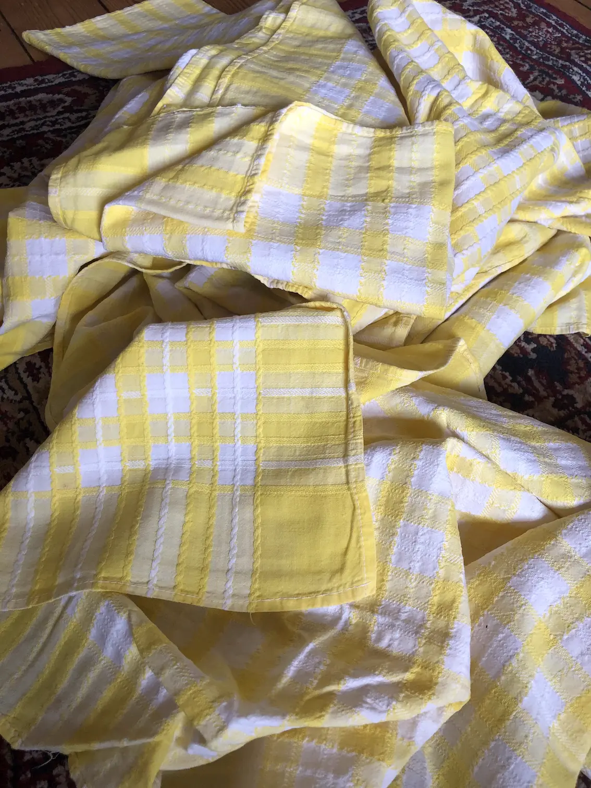
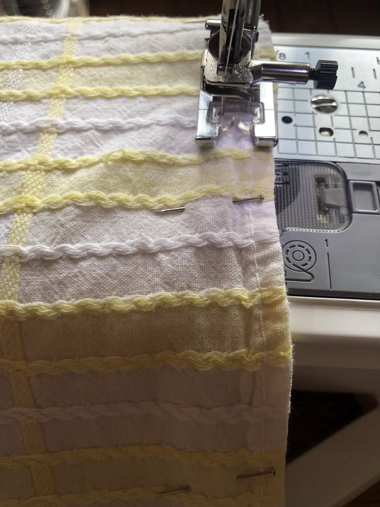
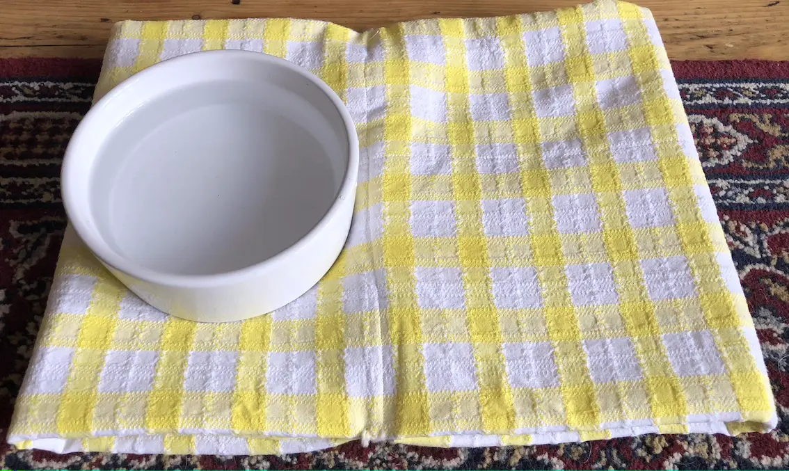

Getting More Use From an Old Tablecloth
A couple of churches have closed their doors over the last few years and have attempted to raise some funds by selling off some of their fixtures and fittings. My husband invited me along and it would have been churlish to refuse the opportunity to gather materials for future sustainability projects.
At the first sale, I purchased a bundle of checked tablecloths. My intention was to convert them into tea towels. I just needed to find the time.
It only took a year or two, but I got there eventually.
We'd actually been using some of the cloths to dry the dishes and discovered they weren't the best at soaking up the water. So I decided to fold them in half, stitch them and have a double layered tea towel. Not sure they've been tested yet, but hopefully they'll do a reasonable job.
There are only so many tea towels a household requires however...and still a few more tablecloths to use.
We used a couple of padded mats for the dog's dishes, to catch drips from water bowls and any scraps left by messy eaters. I think they were originally they were from Lakeland, supposed to provide some sort of cushioning when drying glasses etc. Whatever their intended purpose, we'd had other ideas. We just had issues when they needed to be washed. No substitutes. Until now.
I'd folded the tablecloths once for the tea towels. They were folded a couple more times to fashion feeding mats for our canine friends. Look good and do the trick.
